퀴퀴한 일기 같은 웹툰 추천
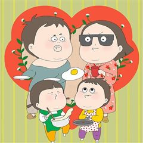
퀴퀴한 일기 · 2B
퀴퀴한 일기 재밌게 봤다면 이 웹툰들도 좋아할 거예요. 같은 장르이면서 공감, 개그 같은 요소가 겹치는 작품을, 겹치는 요소가 많은 순서로 20개 골랐어요.
2026-09-30 기준 · 네이버웹툰·카카오웹툰·레진코믹스 · 성인 작품 제외
내 취향으로 직접 골라 추천받기 →-
1
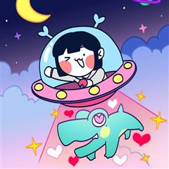
카카오웹툰슬프게도 이게 내 인생
"벌어먹고 살아야 하는 현생은 너무 힘들어!" 거친 현대사회에서 이리저리 치이며 어떻게든 적응해보려는 어리바리 슬이와 쉽지 않은 직장 생활에 약간 돌아버린 친구들의 슬프지만 즐겁게 살려고 노력하는 이야기
공감개그일상·개그카카오웹툰에서 보기 → · 슬프게도 이게 내 인생 같은 웹툰 → -
2
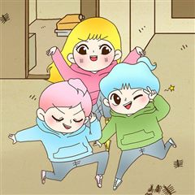
카카오웹툰반지하셋방
밝지만 엉뚱한 첫째와 무뚝뚝한 둘째, 인간 비타민 셋째까지. 청각장애인 어머니와 막노동꾼 아버지 밑에서 가난하게 자라났지만 밝고 유쾌하게 살아가는 세 자매. 그 세 자매 중 첫째와 둘째가 독립을 결심했다! 하지만 독립자금이 모자란 두 사람은 반지하에…
공감개그일상·개그카카오웹툰에서 보기 → · 반지하셋방 같은 웹툰 → -
3
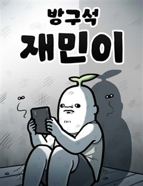
네이버웹툰방구석 재민이
"게임 좀 작작하고 밖에 가서 좀 놀아라!" 바깥보다 집 안이 더 편하고, 스포츠보다 게임이 더 즐거운 방구석 사람들, 어디든 게임이랑 인터넷만 할 수 있다면 그것만으로도 족하다! 오늘도 내 잔잔한 일상을 지키기 위해, 방구석에서 벌어지는 스펙터클한…
공감개그일상·개그네이버웹툰에서 보기 → -
4
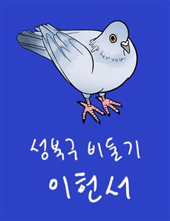
네이버웹툰성북구 비둘기 이헌서
하루 아침에 비둘기가 되어버린 대학생 '이헌서'(여/24) 다시 인간으로 돌아갈 방법을 찾지 못한 헌서는 당분간 같은 동네 남사친 '반휘혈'의 집에 머물며 비둘기 생활을 이어나가게 되는데... 어떤가요 이헌서양, 비둘기 생활 재미있나요?
공감개그일상·개그네이버웹툰에서 보기 → -
5
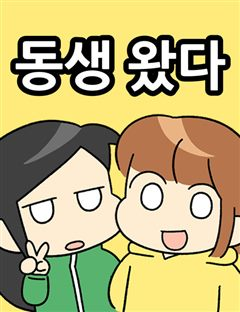
-
6
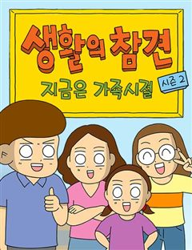
네이버웹툰생활의 참견 2 : 지금은 가족시절
쉽게 지나치는 일상과 지나간 추억 속에서 발견하는 유쾌한 웃음, 자라난 아이들과 더욱 강력해진 케미로 그가 돌아왔다!
공감개그일상·개그네이버웹툰에서 보기 → -
7
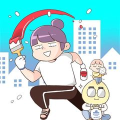
-
8
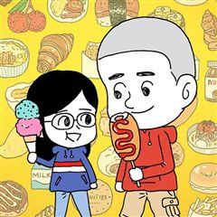
카카오웹툰오무라이스 잼잼
'음식'과 '가족'의 이야기를 담은 에세이 만화. 몇 개라도 먹을 수 있을 것 같은 '메추리알 조림', 빙글빙글 돌아가는 '회전초밥', 지구 반 바퀴 돌아 포르투갈에서 맛본 '에그타르트', 매콤상콤하게 볶아 입맛 도는 '마라샹궈', 짭짤한 밥도둑 '…
공감일상·개그카카오웹툰에서 보기 → · 오무라이스 잼잼 같은 웹툰 → -
9
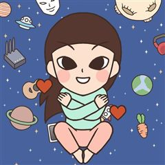
카카오웹툰루나파크 일인용 우주
1인 가구 천만 시대, 혼자만의 우주를 정성껏 보살피는 이야기. 나는 나의 양육자이고, 교육자이고, 보호자니까. 오늘도 루나는 스스로를 먹이고, 가르치고, 지켜낸다. 전세사기를 극복하는 일인용 주거생활, 프리랜서로 먹고사는 일인용 경제생활, 일상을…
공감일상·개그카카오웹툰에서 보기 → -
10
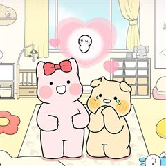
카카오웹툰멍냥패밀리
다정한 F남편 멍군이와 시크한 T아내 냥순이 성격은 정반대지만, 부부라는 이름으로 둘만의 이야기를 써 내려가던 두 사람이 앞으로는 ‘세 가족’이 되기 위한 준비를 시작한다! 첫 임신, 첫 출산을 앞두고 설렘 반, 걱정 반인 멍냥 부부. 임신 준비부터…
공감일상·개그카카오웹툰에서 보기 → -
11
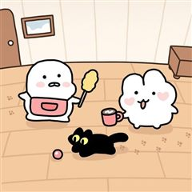
카카오웹툰호롱포롱 동거일기
장거리 연애 6년 끝에 마침내 함께 살게 된 호롱&포롱 커플, 그리고 이들의 반려묘 박장덕(a.k.a 짱덕)까지! 한 지붕 아래, 세 가족의 동거 생활이 시작된다. 연인과 부부 그 어딘가, 그냥 연애 같지만 또 조금은 다른 동거 커플의 발랄하고 리얼…
공감일상·개그카카오웹툰에서 보기 → -
12
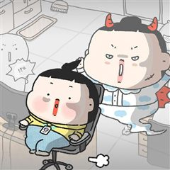
카카오웹툰유니유니툰
‘나는 특별해’ 병을 완치하지 못하고 미대를 졸업한 유니. 그렇게 마주한 사회는 겨울 한파보다 훨씬 혹독했다! 특별하긴커녕, 평범하게 사는 것조차 쉽지 않단 현실을 깨달은 유니는 지옥철을 타고 졸린 눈을 비비며 아메리카노로 수혈하는 ‘평범한’ 직장인…
공감일상·개그카카오웹툰에서 보기 → -
13
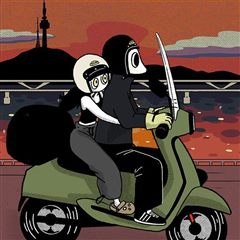
카카오웹툰내일도 흔들릴 나에게
부모와 연인에게 받은 폭력 속에서도, 만성적인 불안과 결핍 때문에 관계를 끊어내지 못하던 '디디'. 그러던 어느 날, 다정하고 진중한 '유진'을 만나 마침내 폭력의 관계에서 벗어날 용기를 얻는다. 하지만 사랑이 시작되었다고 해서 상처까지 사라지는 것…
공감일상·개그카카오웹툰에서 보기 → -
14
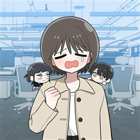
카카오웹툰인간관계는 너무 어려워!
인간관계는 왜 이렇게 어려운 걸까? 십년지기 친구 '홍주'에게 손절당한 '소곰'. 같은 무리의 친구들에게까지 외면받은 충격에 지난날을 돌아보며 새사람이 되기로 결심한다. 하지만 교수님의 추천으로 입사한 회사에서 하필이면 홍주와 다시 마주치고, 악몽…
공감일상·개그카카오웹툰에서 보기 → -
15
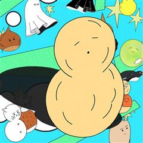
카카오웹툰땅콩일기 스페셜
"삶의 깨끗한 조약돌 같은 것들을. 손에 꼭 쥐고 있어야 해." 마음을 쓰고 그리는 작가, 쩡찌의 그림 에세이 『땅콩일기』. 계절을 지나며 마주한 기쁨과 슬픔, 불안과 위로. 약한 마음으로도 오늘을 살아가고, 슬픔 속에서도 삶의 깨끗한 조약돌 같은…
공감일상·개그카카오웹툰에서 보기 → -
16
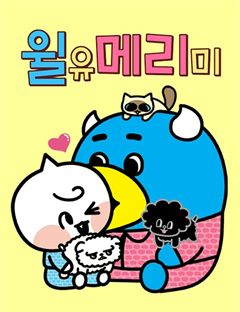
-
17
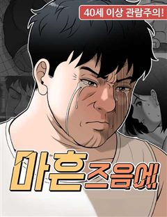
네이버웹툰마흔 즈음에
어느 덧 마흔살이 된 현성민은 주변을 돌아보니 혼자가 되었다는 현실을 절실히 깨닫게 된다. 자신의 인생 뿐 아니라 직장에서도 위기를 맞게 된 현성민은 진정한 행복을 찾기 위해 고군분투 하기로 결심한다. 불혹의 나이, 아직 늦지 않았다!
공감개그일상·개그네이버웹툰에서 보기 → -
18
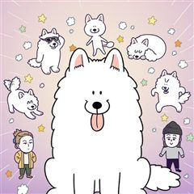
카카오웹툰극한견주 시즌2
약 먹기 싫어! 병원 가기 싫어! 내가 좋아하는 것만 하면서 살 거야! 9살 솜이, 어엿한 중년견이 되었으니 모든 게 순조로울 줄 알았다. B.U.T 우끼빡기도 안 하고, 미사일 발사도 안 하지만 어쩐지… 지능캐가 되어버렸다고나 할까? 그렇다고 물러…
개그일상·개그카카오웹툰에서 보기 → · 극한견주 시즌2 같은 웹툰 → -
19
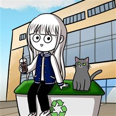
카카오웹툰재활용 머학생
'쓰레기 머학생'이었던 수레기, 의대생이 되어 돌아왔다. 제멋대로 대학생활을 보내며 전공이었던 수학을 잔뜩 싫어했던 수레기는 졸업 후 수능을 다시 보고 의대에 합격한다. 늦은 나이에 다시 신입생이 되어 시작하는 두 번째 대학생활! 이번에는 이전처럼…
개그일상·개그카카오웹툰에서 보기 → · 재활용 머학생 같은 웹툰 → -
20
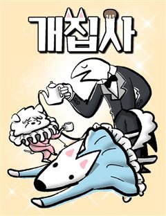
네이버웹툰개집사
출근도 퇴근도 없는 똑같은 일상의 작가…눈치채지 못한 사이 작가의 삶에 다이나믹한 소재를 주는 두 존재가 있었는데…! 작지만 자존감 만큼은 하늘 같은 말티즈, 덩칫값못하는 진도 믹스 아가씨들을 모시는 집사&작가의 삶
공감개그일상·개그네이버웹툰에서 보기 →